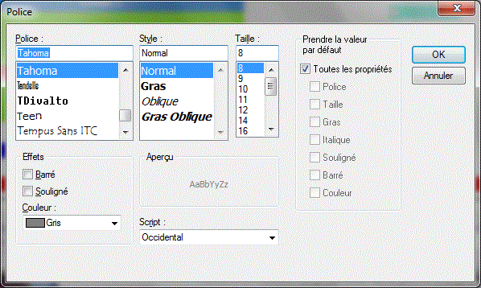
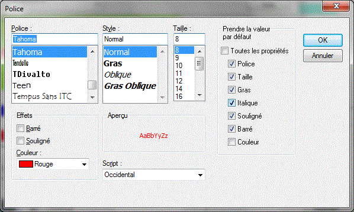
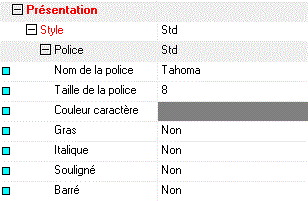
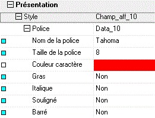
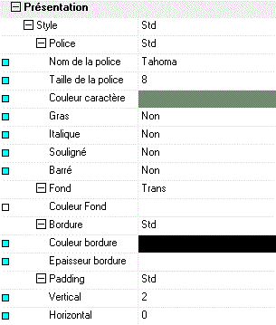
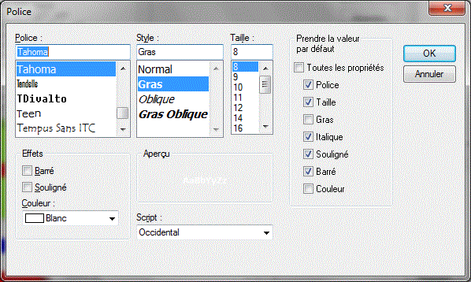
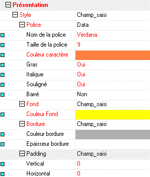
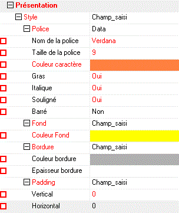

Un rendu « Standard Divalto » a été défini pour chaque type d’objet (Fond d’écran, Texte, Champ, Case à cocher, ..., Onglets, Boutons, etc.). Par exemple, le rendu standard d’un champ est le suivant :
Les propriétés concernées sont celles des Styles :
Police : fonte, taille et couleur des caractères, style, effets.
Couleur.
Bordure : couleur et épaisseur.
Padding : espacements verticaux et horizontaux laissés libre autour du contenu de l’objet.
Dans la feuille de styles, chacune de ces propriétés dispose de l'option « Prendre la valeur par défaut ».
A tout objet portant le style S, le client affecte le rendu standard de la propriété P du style S si l’option « Prendre la valeur par défaut » est validée pour cette propriété P (ou si l'option "Toutes les propriétés" est validée).
Exemples :


Dans la fenêtre des propriétés de Xwin, une propriété qui doit prendre la valeur standard est visualisée par un petit carré de couleur cyan affiché dans la marge :


Remarque importante concernant l’affichage des masques dans Xwin :
Xwin NE tient PAS compte des options « Prendre la valeur par défaut » : il affiche les objets avec les valeurs définies au niveau du style. (Remarque : de plus, Xwin utilise l’interface Win32 pour ses affichages et cette interface impose certaines restrictions ; par exemple, les textes des cases à cocher et des boutons radio sont toujours de couleur noire.)
Exemple : le champ défini avec les propriétés suivantes :

Conséquence importante :
Chaque type d’objet a généralement son propre rendu standard. Les styles ayant des propriétés par défaut ont donc une cible dédiée.
Par exemple, le rendu standard d’un label est différent de celui d’un champ (ce dernier a une bordure et des paddings que le label n’a pas). Si vous appliquez le style STD (dont la plupart des propriétés sont déclarées par défaut) à un label et à un champ, vous n’obtiendrez pas le même résultat pour ces deux objets à l’exécution (alors que le résultat dans Xwin est identique).
Il convient donc d’être prudent et de ne pas affecter un style « standard » à un objet auquel il ne s’applique pas.
Autre exemple : dans fstyleWpf, le style de couleur GROUPE définit une couleur de fond standard (gris foncé) qui s’applique spécifiquement aux objets « Groupe ». Affecté à un objet cadre, ce dernier ne prendra pas cette couleur de fond à l’exécution. De même, le style de police GROUPE définit des attributs de police standard (gras, couleur blanche) ciblés sur les objets « Groupe ». Affecté à un objet champ, ce dernier ne prendra pas ces attributs de police à l’exécution. C’est la raison pour laquelle le style CHAMP_AFF_TITREGROUPE a été créée dans la feuille fstyleWpf : il est destiné aux champs qui doivent être affichés « sur » l’en-tête d’un objet « Groupe » :

Attention aussi en cas de personnalisation d’une propriété pour laquelle l’option « Prendre la valeur par défaut » est activée.
Exemple : le champ défini avec les propriétés personnalisées suivantes :


Remarque : dans la feuille de styles Divalto fstyleWpf, les polices définies avec l’option « Prendre la couleur par défaut » (de couleur grise à l’exécution) ont été volontairement laissées en noir (pour leur affichage dans Xwin) pour plusieurs raisons :
Uniformité avec la couleur de police des cases à cocher et des radios boutons (qui est toujours noire car Win32 ne permet pas de la changer).
Car la couleur exacte à l’exécution (105,105,105) ne peut pas être sélectionnée dans la boîte standard de dialogue des polices (qui ne propose que 16 couleurs).
Parce que la couleur la plus approchante parmi ces 16 couleurs (la couleur grise) a été jugée trop claire par les développeurs.
Attention : On vient de voir que le rendu « standard » Divalto obtenu à l'exécution est indépendant des valeurs spécifiées dans la feuille de styles. Toutefois, pour que le rendu obtenu dans Xwin et pour que le calcul des tailles des boîtes fait par Xwin s’approchent le plus possible du résultat final, les valeurs spécifiées dans la feuille de styles doivent être si possible identiques aux valeurs utilisées à l’exécution. Le cas échéant, consultez la feuille standard fstyleWpf, qui respecte ces impératifs.